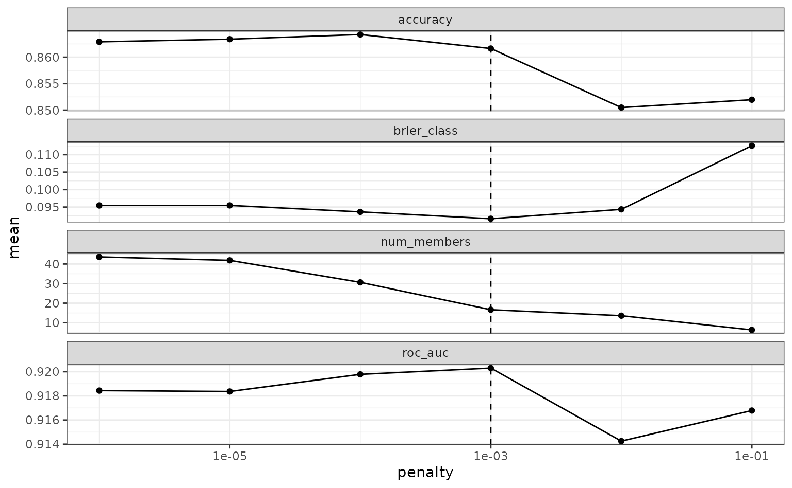
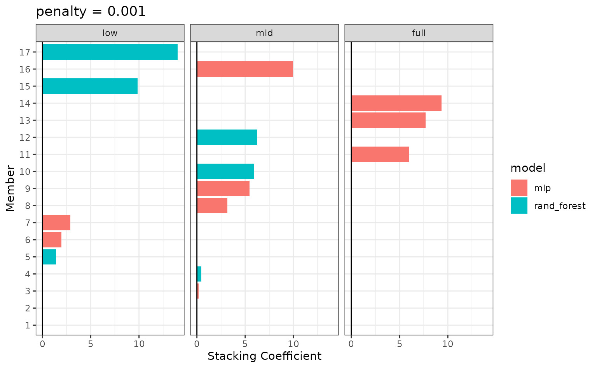

Classification Models With stacks
classification.RmdIn this vignette, we’ll tackle a multiclass classification problem using the stacks package. This vignette assumes that you’re familiar with tidymodels “proper,” as well as the basic grammar of the package, and have seen it implemented on numeric data; if this is not the case, check out the “Getting Started With stacks” vignette!
Allison Horst’s palmerpenguins package contains data giving measurements taken from three different species of penguins from three different islands in Antarctica. This study was carried out across three years—we might suspect that weather conditions may play a role in penguin migration and, to some extent, morphology (e.g. body mass). In this article, we’ll use the stacks package to predict the year that these measurements were taken in using a stacked ensemble on the palmerpenguins data.
library(palmerpenguins) data("penguins") str(penguins) #> tibble [344 × 8] (S3: tbl_df/tbl/data.frame) #> $ species : Factor w/ 3 levels "Adelie","Chinstrap",..: 1 1 1 1 1 1 1 1 1 1 ... #> $ island : Factor w/ 3 levels "Biscoe","Dream",..: 3 3 3 3 3 3 3 3 3 3 ... #> $ bill_length_mm : num [1:344] 39.1 39.5 40.3 NA 36.7 39.3 38.9 39.2 34.1 42 ... #> $ bill_depth_mm : num [1:344] 18.7 17.4 18 NA 19.3 20.6 17.8 19.6 18.1 20.2 ... #> $ flipper_length_mm: int [1:344] 181 186 195 NA 193 190 181 195 193 190 ... #> $ body_mass_g : int [1:344] 3750 3800 3250 NA 3450 3650 3625 4675 3475 4250 ... #> $ sex : Factor w/ 2 levels "female","male": 2 1 1 NA 1 2 1 2 NA NA ... #> $ year : int [1:344] 2007 2007 2007 2007 2007 2007 2007 2007 2007 2007 ... penguins <- penguins %>% drop_na(sex) %>% mutate(year = as.factor(year))
Let’s plot the data to get a sense for how separable these three years groups are.
library(ggplot2) ggplot(penguins) + aes(x = bill_length_mm, y = bill_depth_mm, color = year) + geom_point() + labs(x = "Bill Length (mm)", y = "Bill Depth (mm)", col = "Year")

Just with these two predictors, it seems like this might be a tough problem to solve! Let’s see how well the stacked ensemble can classify these penguins.
Defining candidate ensemble members
As in the numeric prediction setting, defining the candidate ensemble members is undoubtedly the longest part of the ensembling process with stacks. First, splitting up the training data, generating resamples, and setting some options that will be used by each model definition.
# some setup: resampling and a basic recipe set.seed(1) penguins_split <- initial_split(penguins) penguins_train <- training(penguins_split) penguins_test <- testing(penguins_split) folds <- rsample::vfold_cv(penguins_train, v = 5) penguins_rec <- recipe(year ~ ., data = penguins_train) %>% step_dummy(all_nominal(), -year) %>% step_zv(all_predictors()) penguins_wflow <- workflow() %>% add_recipe(penguins_rec)
We also need to use the same control settings as in the numeric response setting:
ctrl_grid <- control_stack_grid()
We’ll define two different model definitions to try to predict year—a random forest and a neural network.
Starting out with a random forest:
rand_forest_spec <- rand_forest( mtry = tune(), min_n = tune(), trees = 500 ) %>% set_mode("classification") %>% set_engine("ranger") rand_forest_wflow <- penguins_wflow %>% add_model(rand_forest_spec) rand_forest_res <- tune_grid( object = rand_forest_wflow, resamples = folds, grid = 10, control = ctrl_grid )
Now, moving on to the neural network model definition:
nnet_spec <- mlp(hidden_units = tune(), penalty = tune(), epochs = tune()) %>% set_mode("classification") %>% set_engine("nnet") nnet_rec <- penguins_rec %>% step_normalize(all_predictors()) nnet_wflow <- penguins_wflow %>% add_model(nnet_spec) nnet_res <- tune_grid( object = nnet_wflow, resamples = folds, grid = 10, control = ctrl_grid )
With these model definitions fully specified, we’re ready to start putting together an ensemble!
Putting together a stack
Building the stacked ensemble, now, only takes a few lines:
penguins_model_st <- # initialize the stack stacks() %>% # add candidate members add_candidates(rand_forest_res) %>% add_candidates(nnet_res) %>% # determine how to combine their predictions blend_predictions() %>% # fit the candidates with nonzero stacking coefficients fit_members() penguins_model_st #> # A tibble: 10 x 4 #> member type weight class #> <chr> <chr> <dbl> <chr> #> 1 .pred_2009_nnet_res05 mlp 49.3 2007 #> 2 .pred_2008_nnet_res05 mlp 45.8 2007 #> 3 .pred_2009_nnet_res05 mlp 39.8 2008 #> 4 .pred_2008_nnet_res05 mlp 9.10 2009 #> 5 .pred_2008_nnet_res07 mlp 8.83 2009 #> 6 .pred_2009_nnet_res07 mlp 5.78 2008 #> 7 .pred_2009_nnet_res07 mlp 5.28 2009 #> 8 .pred_2008_nnet_res08 mlp 4.17 2008 #> 9 .pred_2008_nnet_res06 mlp 3.72 2008 #> 10 .pred_2009_rand_forest_res02 rand_forest 3.42 2009
To make sure that we have the right trade-off between minimizing the number of members and optimizing performance, the autoplot() method comes in hand:

To show the relationship more directly:
autoplot(penguins_model_st, type = "members")

If these results were not good enough, blend_predictions() could be called again with different values of penalty. As it is, blend_predictions() picks the penalty parameter with the numerically optimal results. To see the top results:
autoplot(penguins_model_st, type = "weights")

There are multiple facets since the ensemble members can have different effects on different classes.
This object is now ready to predict with new data!
### penguins_pred <- ### penguins_test %>% ### bind_cols(predict(penguins_model_st, ., type = "prob"))
Computing the ROC AUC for the model:
### yardstick::roc_auc( ### penguins_pred, ### truth = year, ### contains(".pred_") ### )
Looks like our predictions were pretty strong! How do the stacks predictions perform, though, as compared to the members’ predictions? We can use the members argument to generate predictions from each of the ensemble members.
### penguins_pred <- ### penguins_test %>% ### select(year) %>% ### bind_cols( ### predict( ### penguins_model_st, ### penguins_test, ### type = "class", ### members = TRUE ### ) ### )
Voila! You’ve now made use of the stacks package to predict the island that penguins live on using a stacked ensemble!